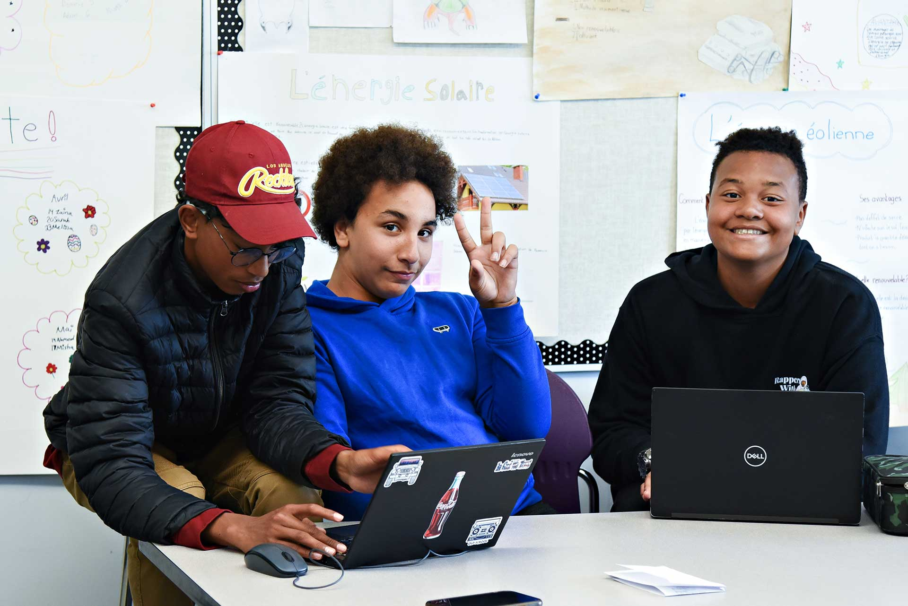
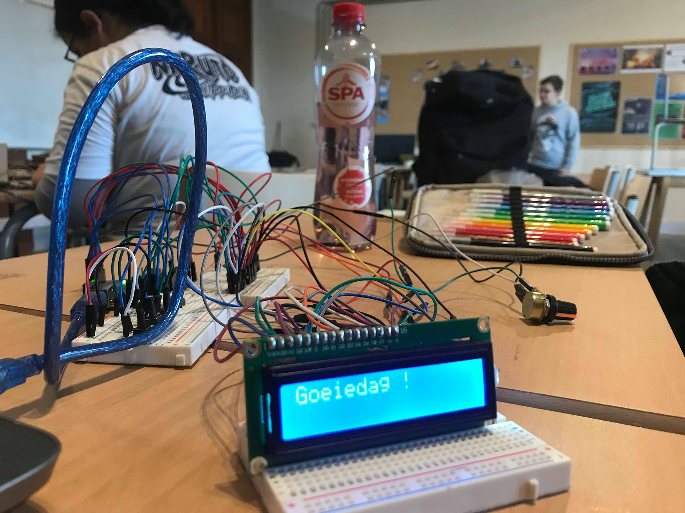
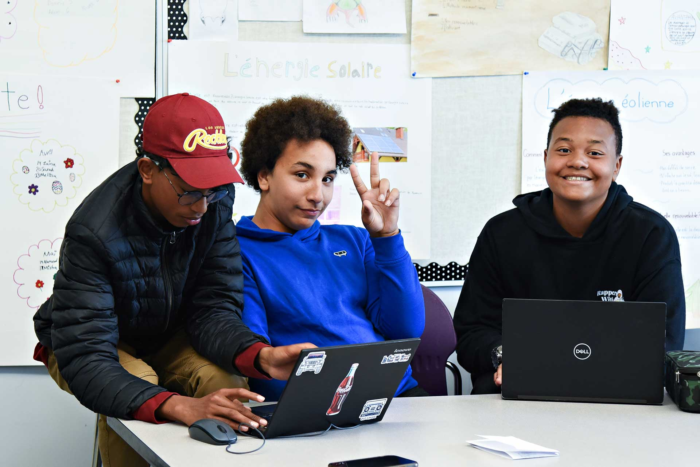
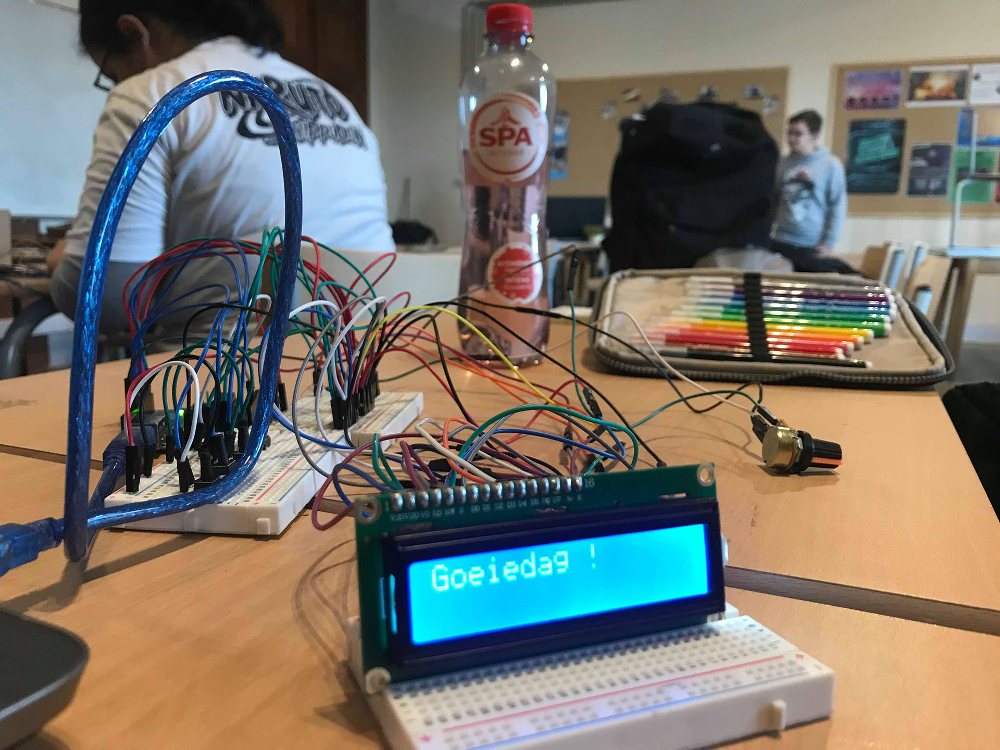

Électricité
Formation en installations électriques, maintenance et sécurité des systèmes.
En savoir plus


 



« Former l’excellence technique de demain »
Une école technique engagée dans une formation de qualité, un encadrement rigoureux et une préparation concrète au monde professionnel.
Des filières variées pour répondre aux besoins actuels du marché de l’emploi.
Formation en installations électriques, maintenance et sécurité des systèmes.
En savoir plusInitiation à la programmation, réseaux, maintenance et outils bureautiques.
En savoir plusTechniques de maintenance, montage et réparation de systèmes mécaniques.
En savoir plusNotions de dessin, maçonnerie, structures et suivi de chantier.
En savoir plusGestion comptable de base, finances, gestion administrative d’entreprise.
En savoir plusL’école CHRIST ROI met l’accent sur un enseignement de qualité, un suivi personnalisé des élèves et une pédagogie axée sur la pratique.
Tout au long de l’année, des activités pédagogiques, culturelles et techniques sont organisées pour renforcer les compétences et la confiance des jeunes.